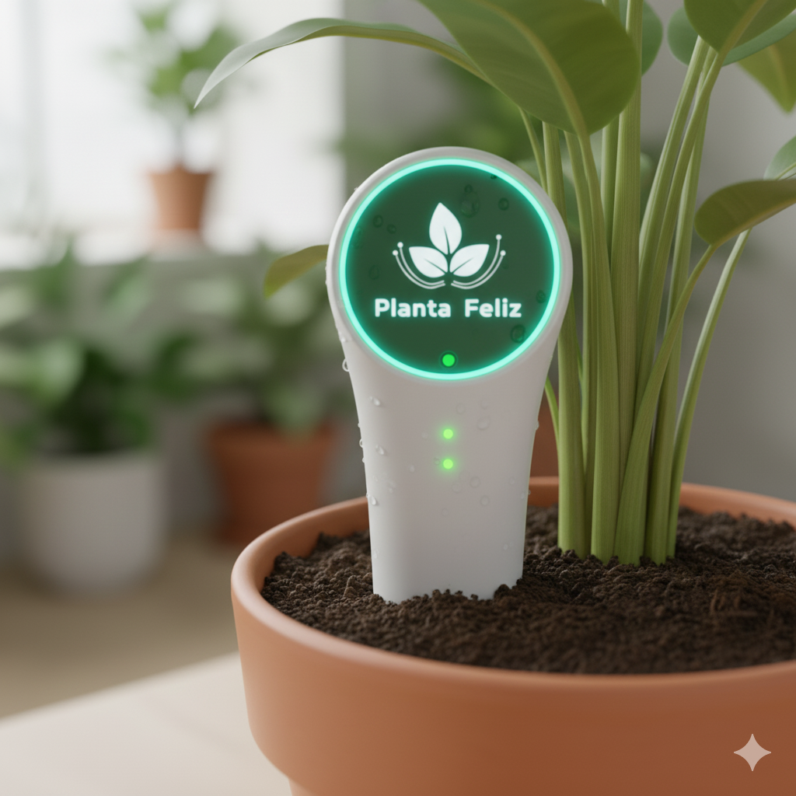

| • Home | • Quem somos | • Portfólio | • Equipe | • Contato |
Este é o hardware físico que você coloca na sua planta. Ele contém sensores de umidade do solo e uma pequena bomba de água. Ele se conecta à sua rede Wi-Fi para enviar dados para o nosso software e receber comandos de irrigação.
